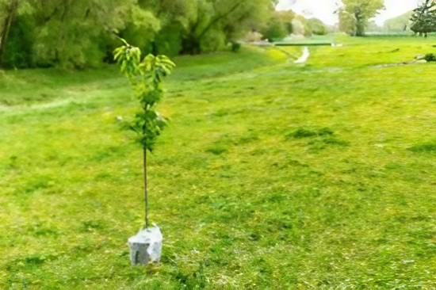
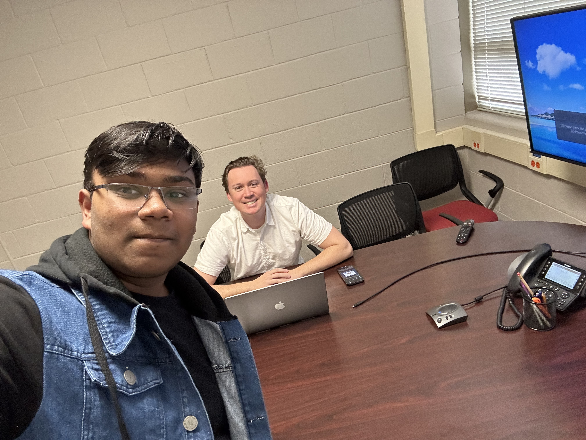

Community & Volunteering
I'm passionate about contributing to my community through volunteering, and helping others grow in technology and beyond. Here are the ways I've been involved in making a positive impact.

Volunteering
I'm dedicated to giving back to my community through various volunteering initiatives. I've participated in community events, organized various tree planting workshops, contributed to serve food at major events in my community.
- Community Clean-Up
- Tree Planting Workshops
- Food Serving at Events
- Fundraising for Local Temples
Mentorship
In my own mentorship experience, I was lucky to be guided by a experienced mentor who helped me navigate a part of my academic journey. I was taught by him, understanding the importance of workflows and how they can be optimized for better outcomes. Together, we worked on a project that taught me the value of planning and collaboration.
- Got Taught CS Fundamentals
- Learned About Workflows
- Collaborated on a Project
- Gained Insights into Academic Growth

Helping Others
Whether you're looking for mentorship, want to collaborate on community projects. These are the websites that connected me with my opportunities.